Breath Holding Without Hyperventilation
What happens to CO₂ and oxygen when you hold your breath after normal breathing? Explore the research, sports applications and practical relevance for climbers.

Breathing Rate, Effort & Perceived Exertion in Climbing
How breathing rate and RPE reveal climbing intensity—with the Adam Ondra and Štěpán Stráník comparison, Pranaclimb field anchors, Raw and Effective BR, HRR₆₀, EPOC and post-climb recovery.
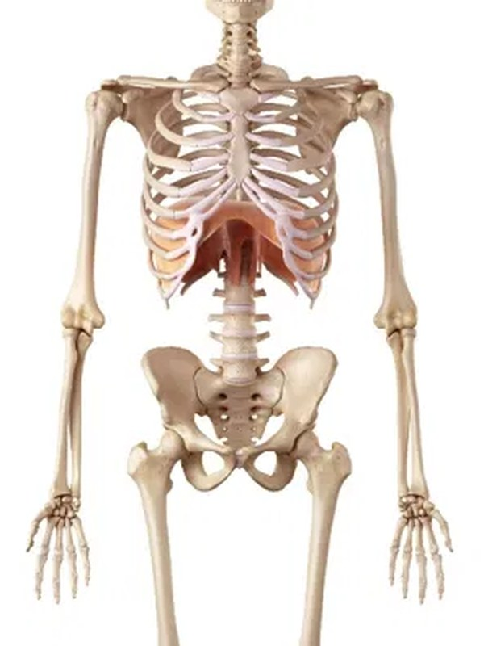
Diaphragm Strength, Thoracic Stability & Limit Climbing
+34.6% diaphragm thickness in 8 weeks. The 2024 science, Tim Emmett's rib injury explained, metaboreflex activation, and 5 field drills — no devices needed.
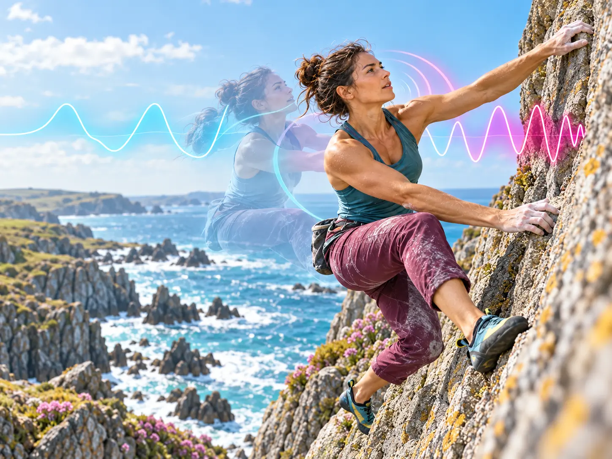
RP & RP Sync
Will Bosi on Burden of Dreams V17 and Jimmy Webb on Sleepwalker V16 — the neuroscience of timing breath to movement, second by second.
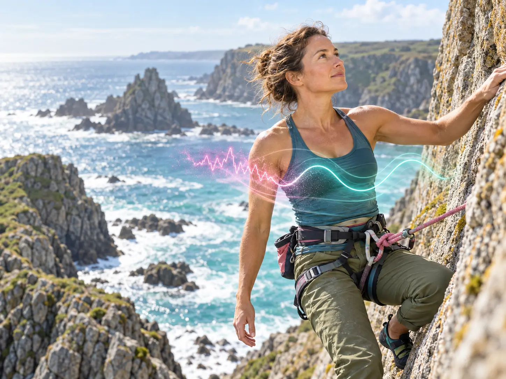
Emotion Regulation & Breathing in Climbing
Fear, uncertainty and body tension can disrupt breathing and raise perceived effort. How awareness, reframing and controlled breathing can help a climber move from threat towards commitment.
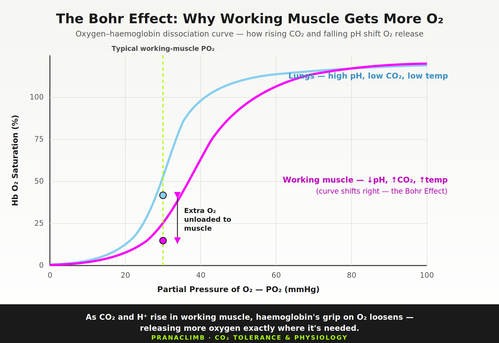
CO₂ Tolerance Tests & Breathwork Tools
MBT vs BOLT vs the Huberman CO₂ Protocol — which test is right for climbers? A deep dive into what each measures, how they integrate with Pranaclimb, and when to use each one.

Micro-Breath Holds in Climbing
Breath holding, Valsalva-like bracing, CO₂-related respiratory drive and a possible splenic response can converge during hard climbing—without being the same mechanism. See what Pranaclimb can observe and what remains a research hypothesis.

Capillarization, Angiogenesis & Climbing Performance
The C:F ratio, ARC training, Zone 2, and how nasal breathing amplifies the capillarization stimulus. The vascular infrastructure of climbing endurance.

Spleen Contraction, Breath Holding & Performance
Maximal exercise and sufficiently demanding apnoea can contract the spleen and temporarily alter circulating red-cell measures. What the evidence shows — and what remains a Pranaclimb hypothesis for climbing.
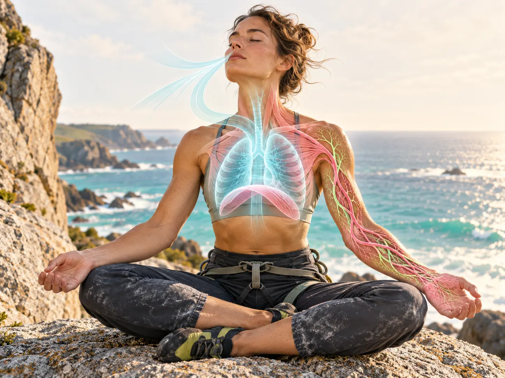
Breathwork, Pranayama & Angiogenesis
Repeated hypoxic exposure can engage signalling involved in vascular adaptation. Whether pranayama creates a meaningful angiogenic response in climbers remains an open research question.
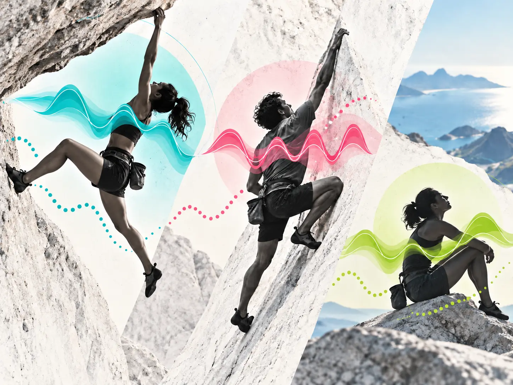
Pranaclimb Analysis of Elite Climbers
Eight case studies applying Pranaclimb's field framework to world-class ascents — from Silence 9c to Sleepwalker V16. Breathing, RPE, recovery and modelled CP, RCP and W′bal interpretations.
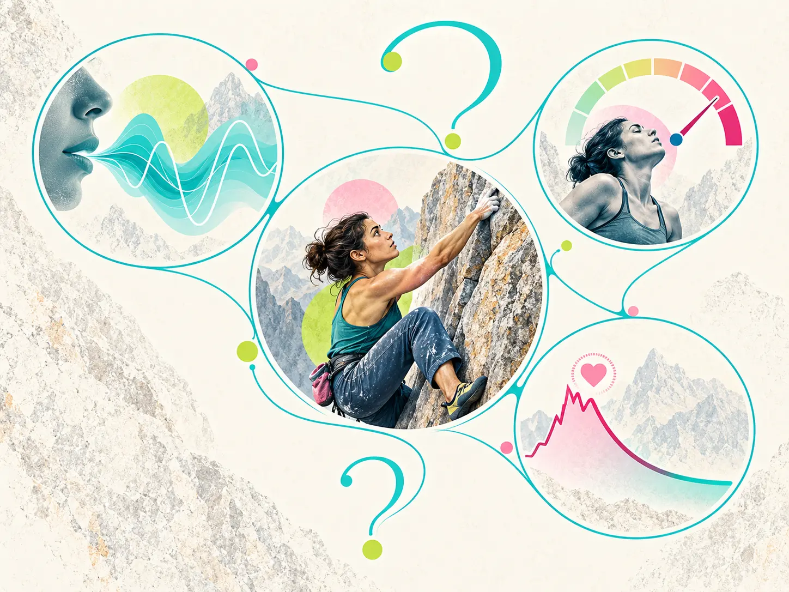
The Pranaclimb Methodology — Full Q&A
What is CP? What is W′bal? How does expressive breathing work? 12 deep-dive questions answered from the published research — with tables, thresholds, and the full RPE scale.
New Posts
The Grey Zone: The Knife-Edge Between Your Redpoint and Coming Off
Pranaclimb's field interpretation of the transition between CP and RCP, where breathing, RPE and recovery patterns can indicate rising unsustainable effort.
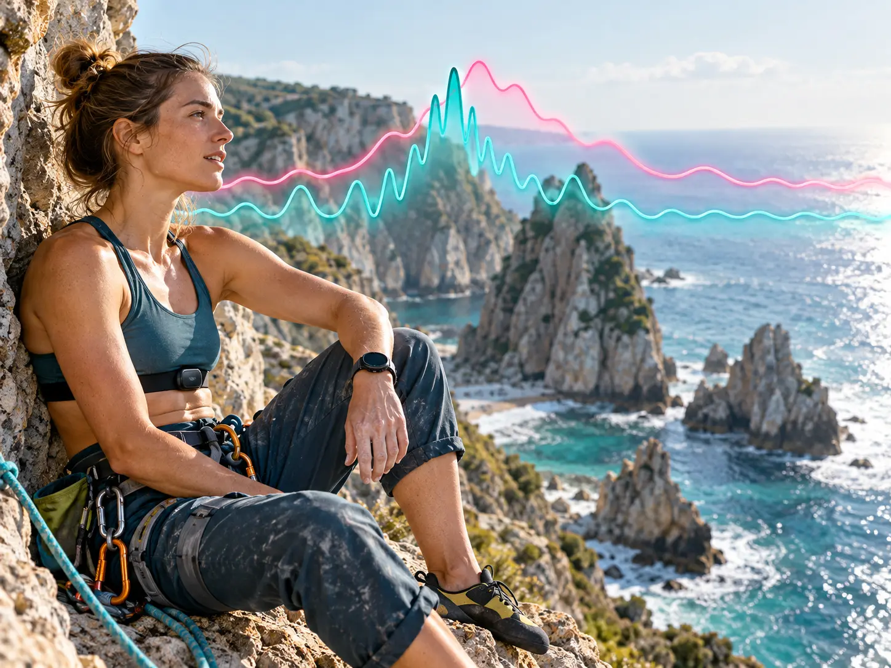
Why Heart Rate Alone Can Mislead Climbers
Isometric contractions, wall angle, emotion and response lag can separate heart rate from local muscular demand. Why Pranaclimb interprets HRR₆₀ alongside BR and RPE.

The Science of Power Screaming in Climbing
Why do climbers scream on hard moves? Explore vocalised exhalation, acute force, trunk pressure, breath–movement coupling — and how Pranaclimb interprets Raw BR, Breath Expressions and Effective BR.

Respiratory-Motor Coupling in Climbing
Breathing and movement interact through mechanical, neural and behavioural coordination. Why timing the exhale may support movement without claiming they are the same system.
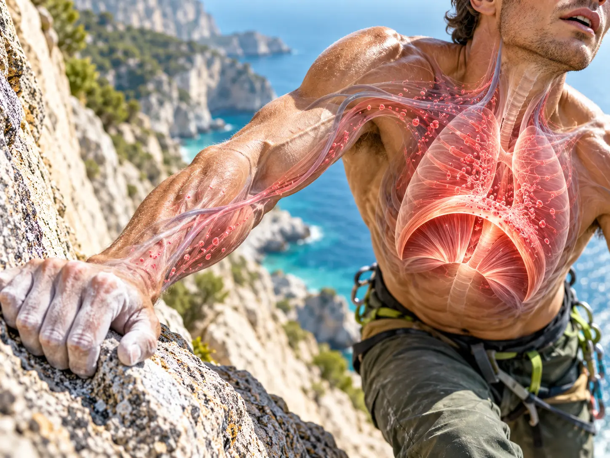
The Respiratory Muscle Metaboreflex in Climbing
Respiratory-muscle fatigue can evoke a sympathetic metaboreflex and alter limb blood flow. What this mechanism may mean for forearm fatigue — and what has not yet been measured in climbers.
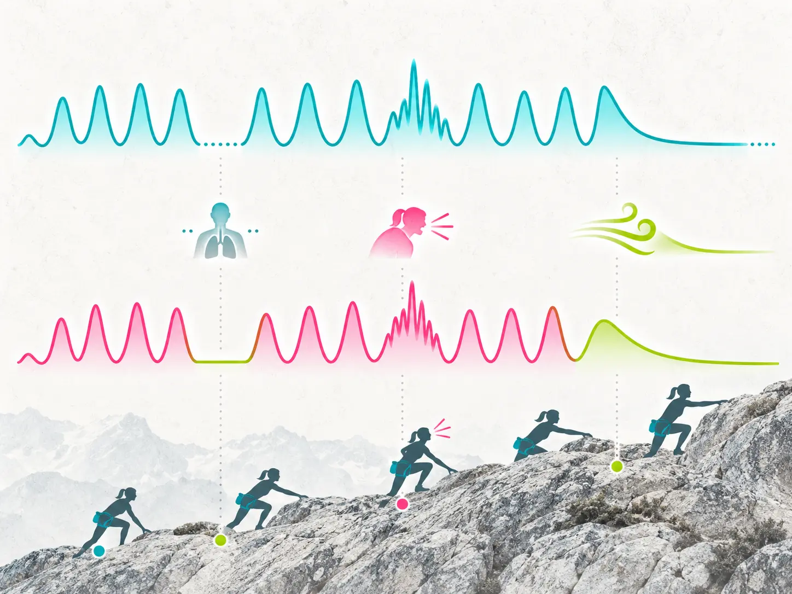
Effective Breathing Rate: A Pranaclimb Field Construct
A transparent adjustment that records breath holds and expressive breathing alongside Raw BR. How it is calculated, capped and interpreted without presenting it as measured ventilation.

Why CO₂ Tolerance Matters in Climbing
CO₂ contributes to respiratory drive and air hunger, but a breath-hold test is not a direct measure of climbing fitness. How to train respiratory discomfort tolerance progressively.
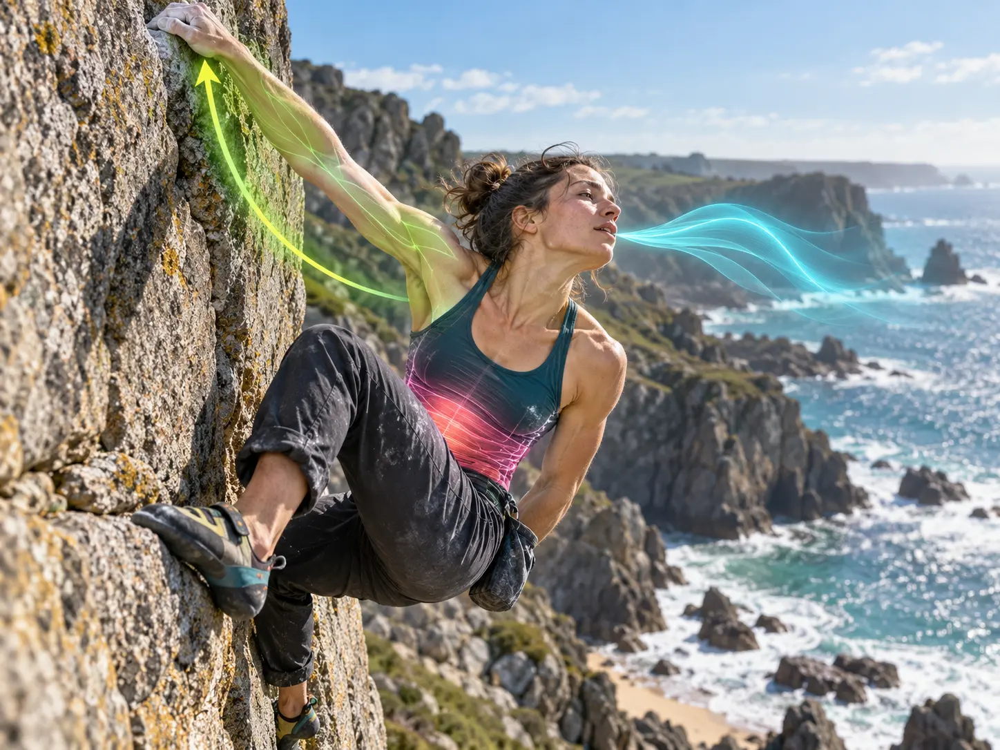
Breath Holding in Climbing: Brace. Move. Breathe.
A clear introduction to tactical breath holding, Valsalva-like bracing, CO₂ tolerance and splenic contraction — four connected layers of maximal climbing.

Muscle Fibre Types & Climbing Performance
How Type I, Type IIa and Type IIx fibres contribute to endurance climbing, power-endurance sequences and explosive bouldering — and how recruitment changes with intensity.